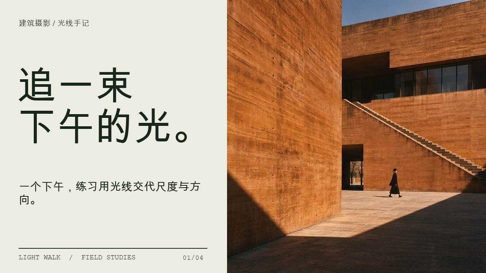
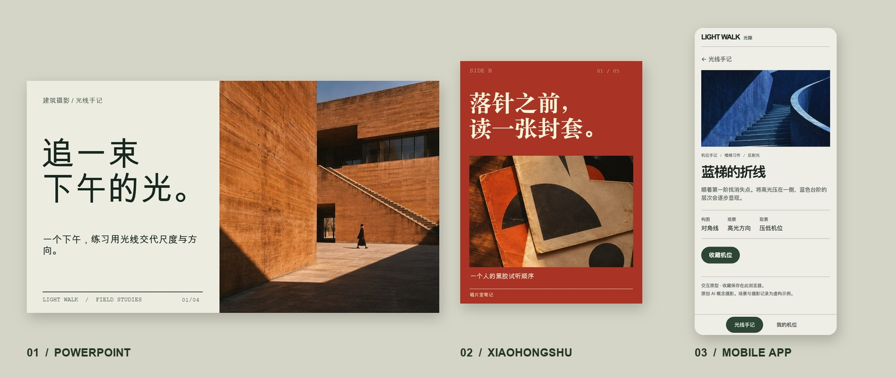
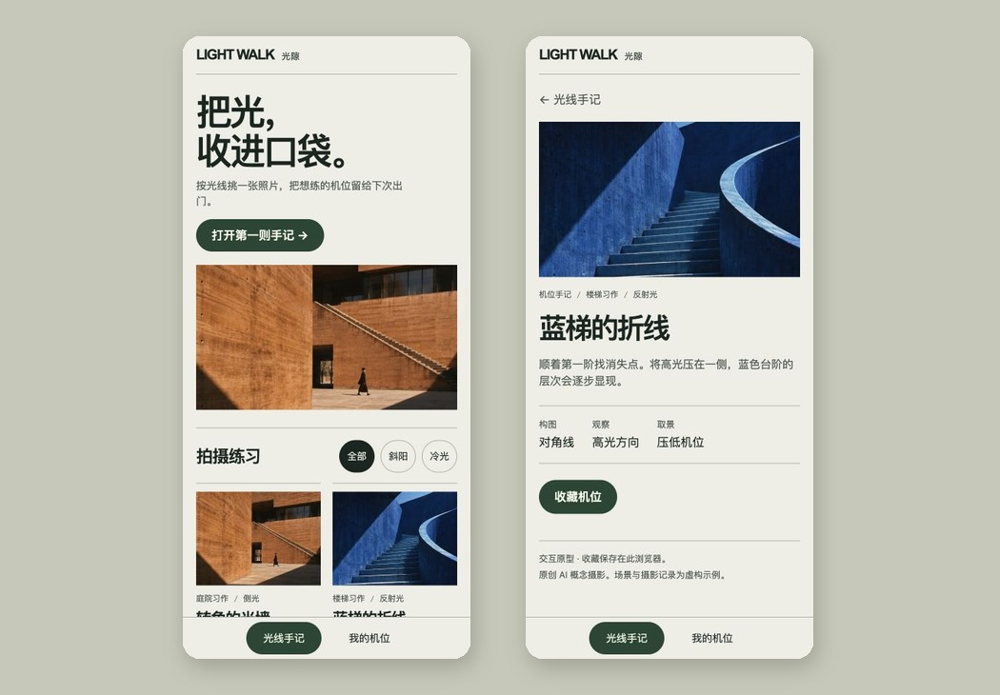
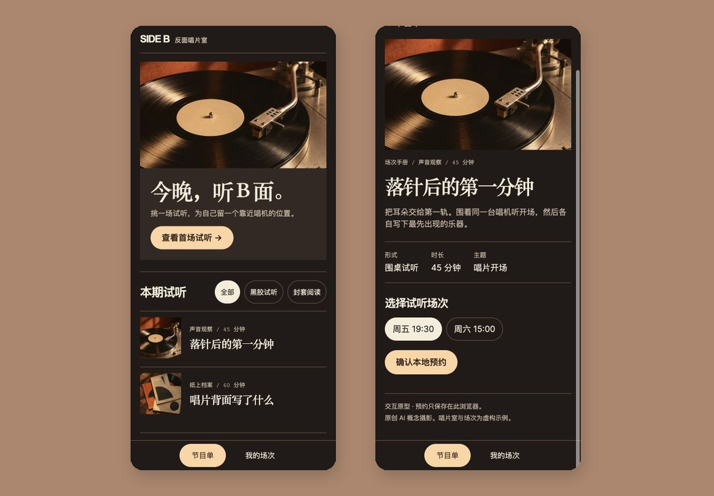
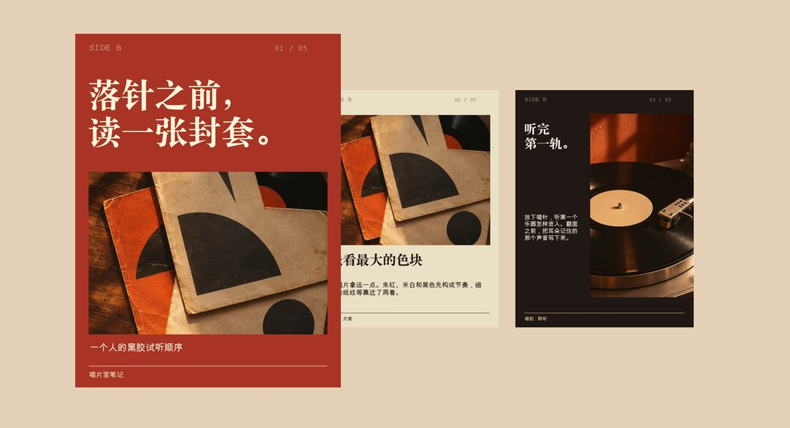

光隙
建筑摄影跟着一位行人读建筑尺度，再沿蓝色台阶找视线。双图对照页里，照片和图注都可独立替换。
给演讲者的幻灯片，给读者的图文，给使用者的界面。打开案例，可以看排版、取走源文件，也可以亲手试一遍。

4 组双语演示 · 可编辑 PPTX

跟着一位行人读建筑尺度，再沿蓝色台阶找视线。双图对照页里，照片和图注都可独立替换。

钴蓝背景托起折叠灯臂，浅色规格页留给买家比较色温与尺寸。

用唱片封套的局部和书籍衬线构成试听邀请，讲清这场活动该怎样听。

从一条模拟潮位曲线，讲到三个测站的采样设计。数据与来源随演示交付。
2 个可操作的移动网页原型

按冷光或斜阳筛选练习，打开机位看构图，收藏后在「我的机位」找回。

从节目单选一场试听，挑时段、确认预约。回到「我的场次」可以改期或取消。


小红书图文
每篇 5 张 · JPG、正文与话题标签
追一束下午的光
1080 × 1440前两张照片示范怎样等人入画、压低机位，滑到最后一张可以存下散步练习清单。

落针之前，读一张封套。
1080 × 1440从封套最大的色块读到唱针落下的第一轨，再给自己的听音笔记留三个问题。